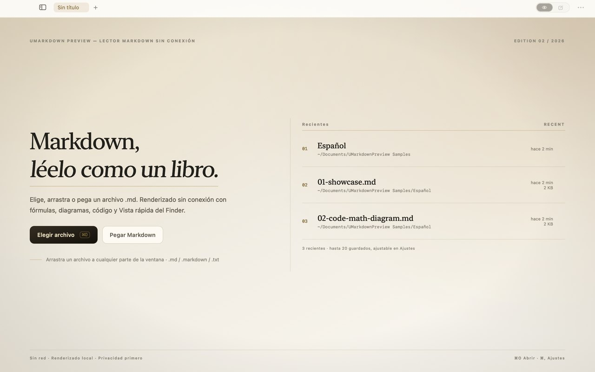
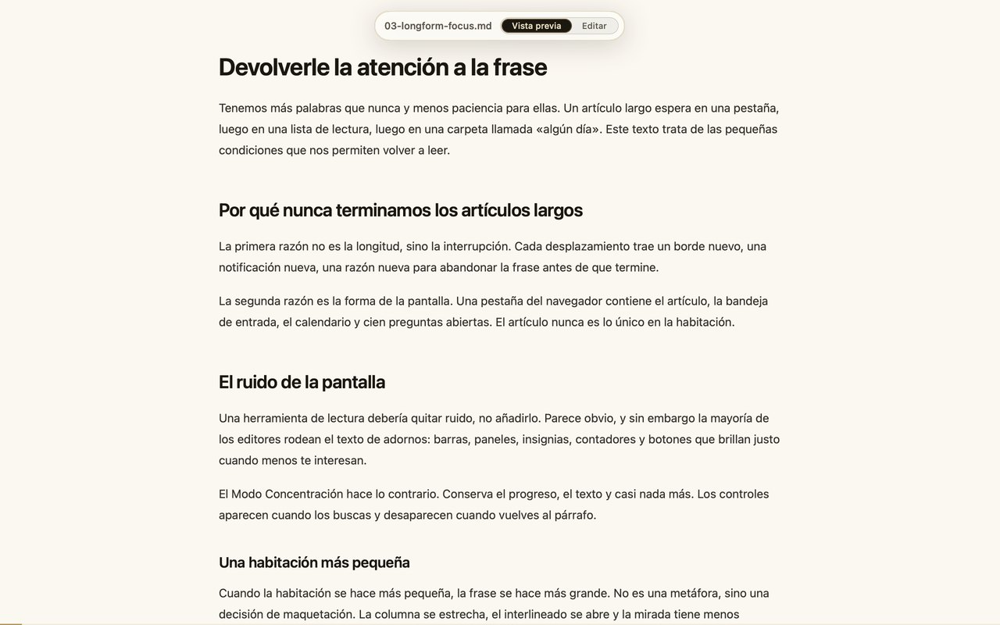
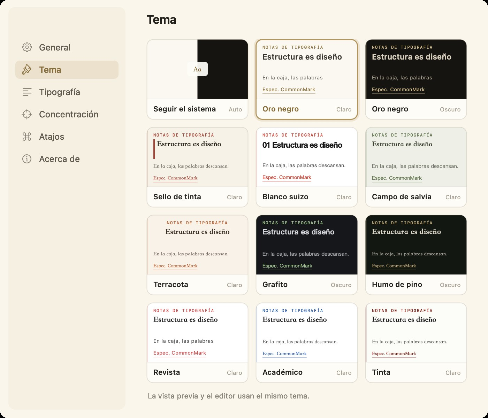
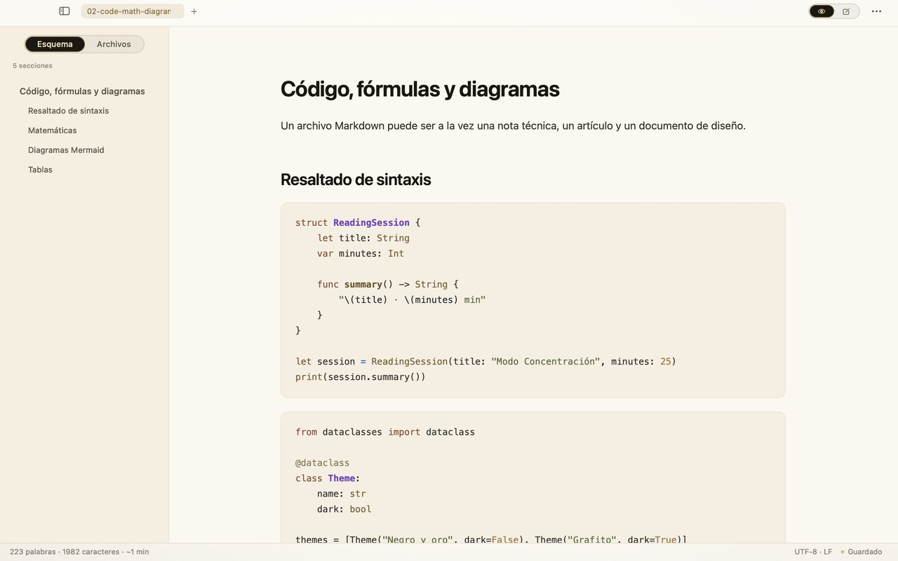
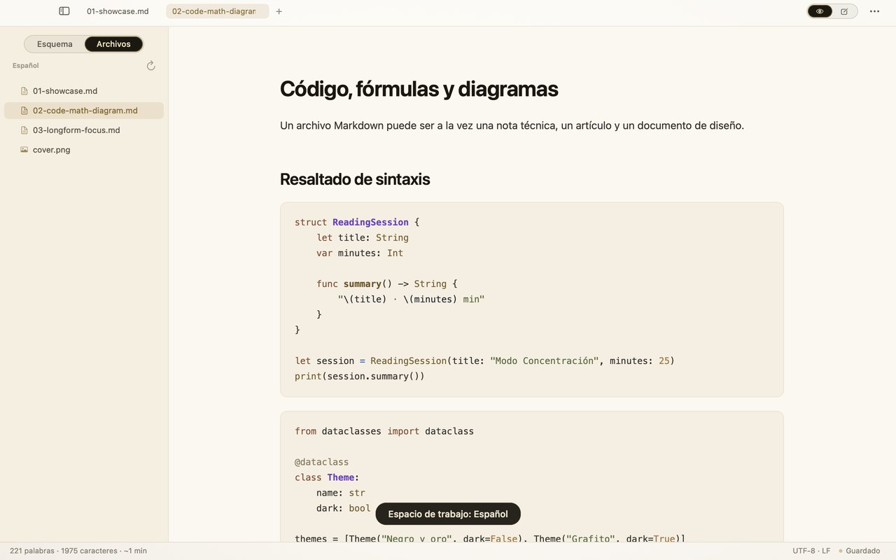

Lector de Markdown sin conexión · macOS
Markdown,leer como un libro.
Un lector y editor de Markdown nativo y silencioso para macOS. Diseño negro y oro, doce temas, espacios de carpeta, fórmulas y diagramas, y un espacio de lectura que no estorba.

01 — Leer
Un espacio de lectura más silencioso.
La ventana se aparta. Quedan el texto, un esquema claro y una línea dorada que te dice cuánto has avanzado.
- 01
Modo Concentración
Pulsa ⌘⇧F y la ventana se reduce al párrafo. Arriba queda una cápsula de progreso; los controles aparecen solo cuando los buscas.
- 02
Doce temas
Sigue el sistema o elige Negro y oro claro/oscuro, Sello de tinta, Blanco suizo, Campo de salvia, Terracota, Grafito, Humo de pino, Revista, Académico o Tinta.
- 03
Tipografía nativa
Papel cálido, esquema configurable y texto nítido en pantallas Retina y 1×.

Temas
Un documento. Doce formas de verlo.
La vista previa y el editor comparten el mismo tema. Cámbialo una vez y todo el espacio de lectura te sigue.

02 — Escribir
Mantén la atención en la frase.
Editar no debería sentirse como operar una máquina. El editor se aparta: modo máquina de escribir, guardado automático y resaltado que coincide con la vista previa.
- 01
Modo máquina de escribir
El cursor permanece cerca del centro de la pantalla, para que los documentos largos no arrastren la mirada al final.
- 02
Guardado automático
Un segundo después de dejar de escribir, el archivo se guarda en silencio.
- 03
Resaltado en el editor
Los bloques de código se colorean también en el editor, incluso dentro de citas y listas anidadas.

03 — Trabajo
Un espacio de trabajo que por fin lo parece.
Abre una carpeta, no solo un archivo. La barra lateral carga por niveles, las pestañas mantienen varios documentos a mano y la paleta encuentra cualquier cosa con unas teclas.
- 01
Espacios de carpeta
Árboles de carga diferida, cambio de nombre en línea, mostrar en Finder y abrir Terminal aquí.
- 02
Pestañas y restauración
Cierra y vuelve a abrir; ventanas y pestañas regresan a su sitio.
- 03
Apertura rápida
Pulsa ⌘⇧P para la paleta de comandos con búsqueda difusa de archivos y acciones.

05 — Privacidad
Privado por diseño.
Todo se renderiza en tu Mac. Sin cuentas, sin analíticas, sin rastreo. La app no hace solicitudes de red ni recopila datos.
Leer la política de privacidadAbre un archivo. Empieza a leer.
UMarkdownPreview 2.0 ya está disponible en el Mac App Store.
Descargar en el Mac App Store